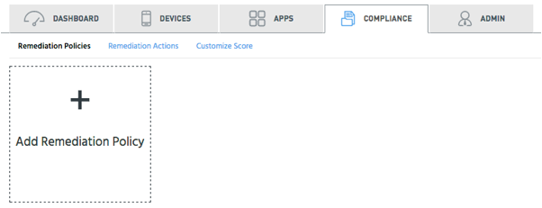
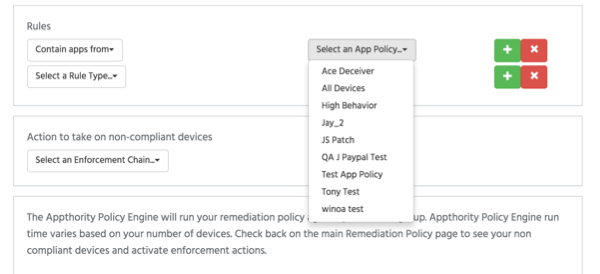
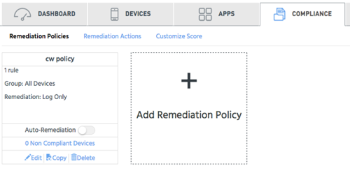

Open topic with navigation
Manage Remediation Policies
Create a remediation policy to define policies for a group of devices, and then set remediation actions. You can also edit, copy, and delete remediation policies.
See Apply Remediation Policies for information on how to apply the policies.
Access this option from Compliance > Remediation Policies and click Add Remediation Policy.

To create a Remediation Policy
- In Create Remediation Policy, enter a name.
- Select a device group, or select All Devices.
- For Rules, select a rule type and, if needed, specific parameters for the rule. Click to add a new rule, or to delete a rule.

- Select an Action to take for noncompliant devices. You can add and manage the actions from Remediation Actions.
To work with existing polices
- Click Edit to open and modify a policy.
- Click Copy to duplicate a policy, for example if you want to make a new policy based on the existing one.
- Click Delete to remove the policy.
